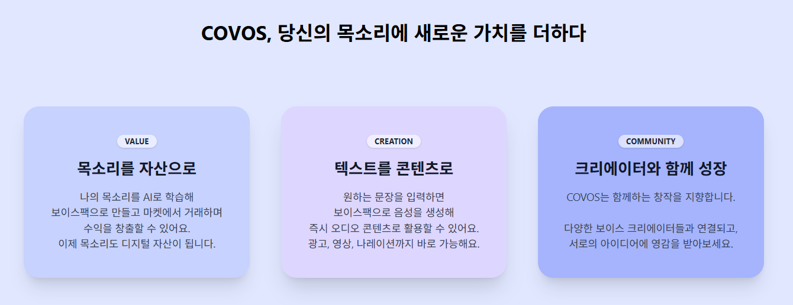
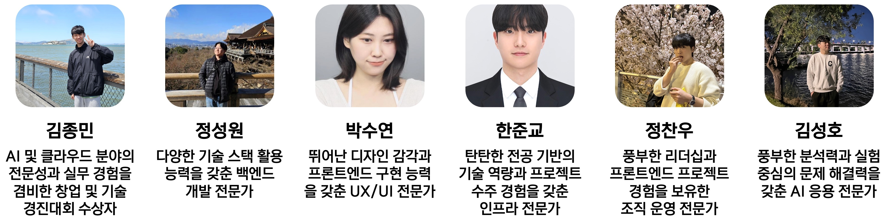
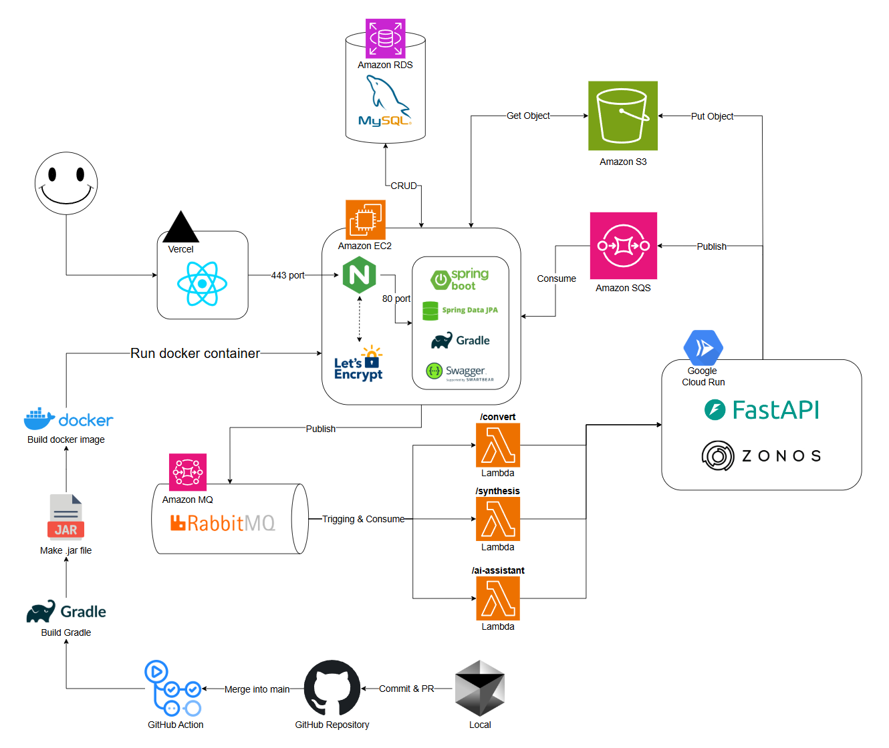

🎙️ COVOS - AI 보이스팩 거래 및 활용 플랫폼

🔗 목차
- 🚀 프로젝트 소개
- 💡 핵심 기능
a. 🗣️ AI 보이스팩 생성
b. 🛍️ 보이스팩 마켓플레이스
c. 🎮 보이스팩 플레이그라운드 - 🎥 소개 영상
- 👥 팀 소개
- 📐 시스템 구조도
- 🧠 기술 스택
- 🛠️ 개발 환경 설정법
- 📂 폴더 구조
🚀 프로젝트 소개

이제 목소리는 표현을 넘어 자산이 됩니다.
- COVOS는 개인이 자신의 목소리를 AI로 학습시켜 보이스팩을 만들고 이를 사고팔 수 있는 플랫폼입니다.
- 최신 제로샷 음성합성 기술을 활용해 단 몇 초의 음성만으로도 고품질 AI 목소리를 생성할 수 있습니다.
- 자신의 AI 목소리를 보유하고, 콘텐츠에 활용하며, 나아가 새로운 디지털 자산 시장의 일원이 될 수 있도록 하는 것이 우리의 목표입니다
💡 핵심 기능
🗣️ AI 보이스팩 생성
- 사용자가 음성을 업로드하면 AI가 해당 음색·억양을 학습하여 보이스팩을 생성합니다.
🛍️ 보이스팩 마켓플레이스
- 생성한 보이스팩을 크레딧 기반으로 자유롭게 판매할 수 있고, 또한 다른 사람들의 보이스팩을 구매할 수 있습니다.
🎮 보이스팩 플레이그라운드
- 구매한 보이스팩은 플레이그라운드에서 다양한 방식으로 활용할 수 있습니다.
🎥 소개 영상
👥 팀 소개

📐 시스템 구조도

🧠 기술 스택
| 영역 | 기술 및 도구 |
|---|---|
| AI/ML | Zero-shot Voice Cloning, PyTorch, HuggingFace |
| Backend | Python, FastAPI, Supabase |
| Frontend | React, TypeScript |
| 인프라 | AWS ECS Fargate, GCP Cloud Run |
| DevOps & 협업도구 | GitHub, Notion, Slack, Trello |
🛠️ 개발 환경 설정법
1. 프로젝트 클론
git clone https://github.com/kookmin-sw/capstone-2025-09.git
cd capstone-2025-09
…
📂 폴더 구조
capstone-2025-09/
├── backend/
├── frontend/
├── docs/
├── .gitignore
├── .env